EtherNet/IP™ Adapter3.04.02 |
 |

|
EtherNet/IP™ Adapter3.04.02 |
|
|
The CODESYS development system is available for download free of charge after registration with the CODESYS Store. Please consult the system requirements in the CODESYS Store for the development PC. It is recommended to install the full package.
For the CODESYS runtime on the KUNBUS RevPi hardware, the CODESYS Control for Raspberry Pi MC SL is required. Without a valid license, the CODESYS runtime including the fieldbus functionality will execute for one hour and then exit. To install the runtime package the CODESYS development system must be started with administrative rights. Installation is performed from within the CODESYS Package Manager or the CODESYS Installer. It is recommended to install the multi-core version.
Start the CODESYS Installer with Administrator privileges. Identify your CODESYS installation and select Change.

Under AddOns, select the Browse tab and search for Raspberry. Check the line with CODESYS Control for Raspberry PI and install the package.

After the package is installed, the CODESYS runtime system must be installed on the RevPi hardware. From the menu system select Tools → Update Raspberry Pi
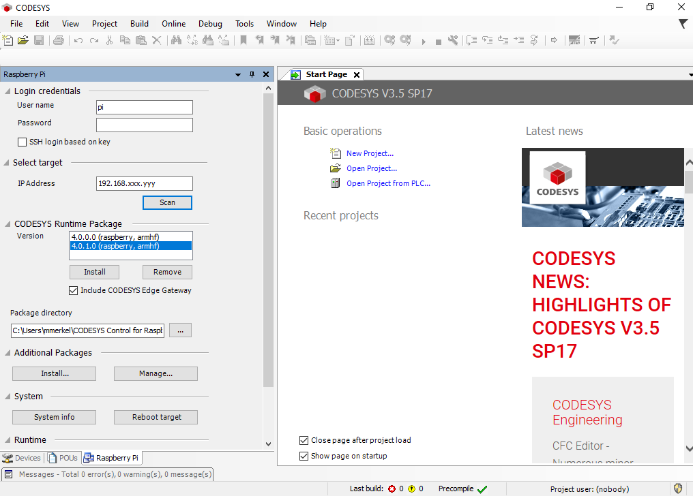
Select the matching CODESYS Runtime Package and click install. To verify that the installation has been successful, select System info.
Start the CODESYS development system and create a new standard project
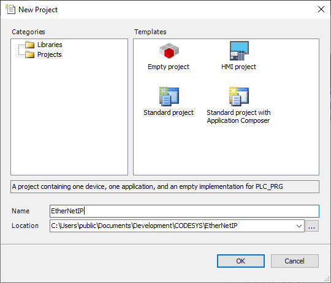
Select CODESYS Control for Raspberry Pi MC SL (3S - Smart Software Solutions GmbH) as device and the programming language of your choice.
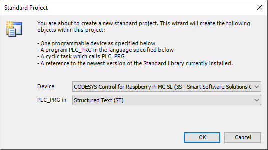
The development system creates the project structure and populates the structure of the device tree.
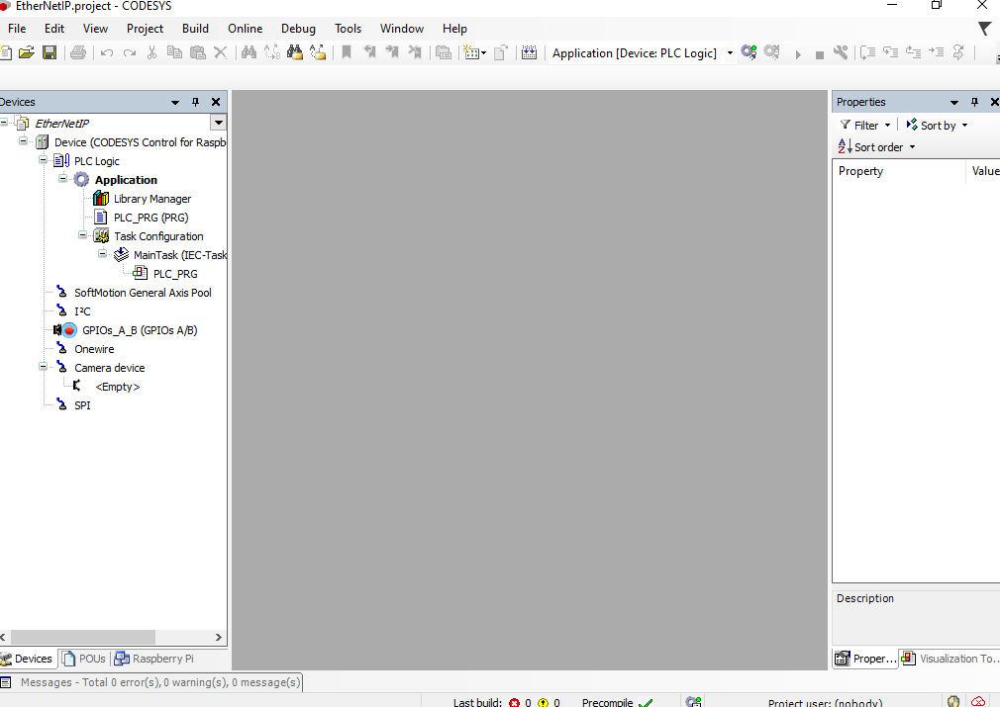
Before configuring the EtherNet/IP network, the matching device description file must be installed into the CODESYS device repository. Navigate to Tools → Device Repository in the menu system and install the file am64x-evm_tiEtherNetIP_freeRTOS.eds which is part of the distribution.
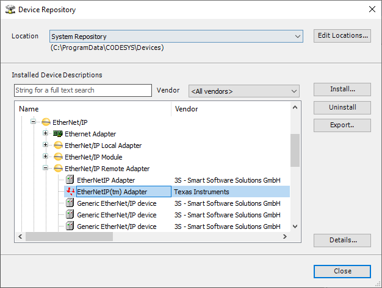
In the device tree, double click on Device to open the Device tab in the central workspace.
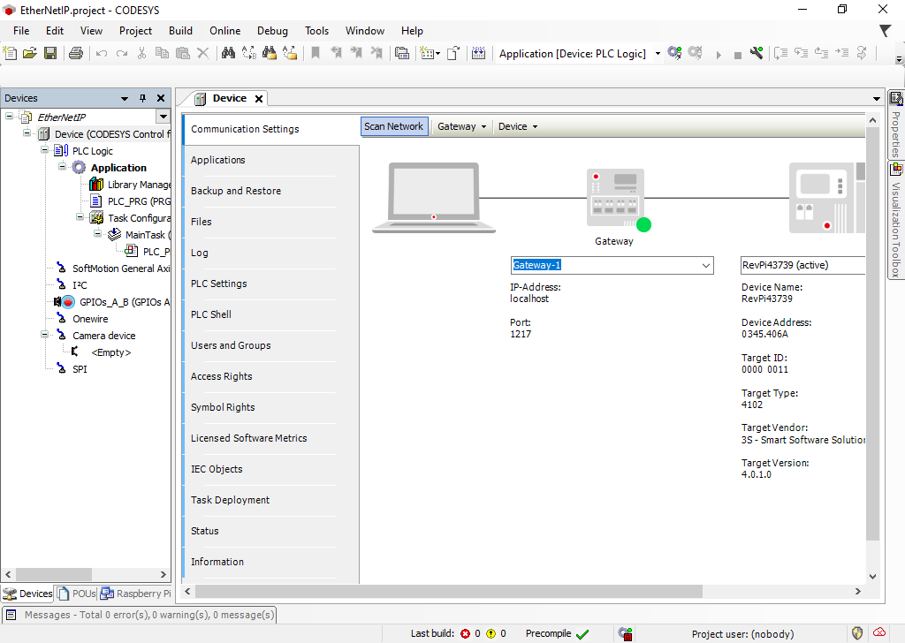
Perform a Scan Network and select the corresponding device in the Select Device dialog.
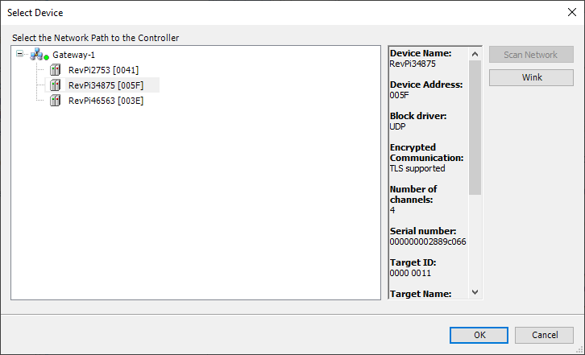
Right-clicking on Device in the project tree and add an Ethernet interface to the Device
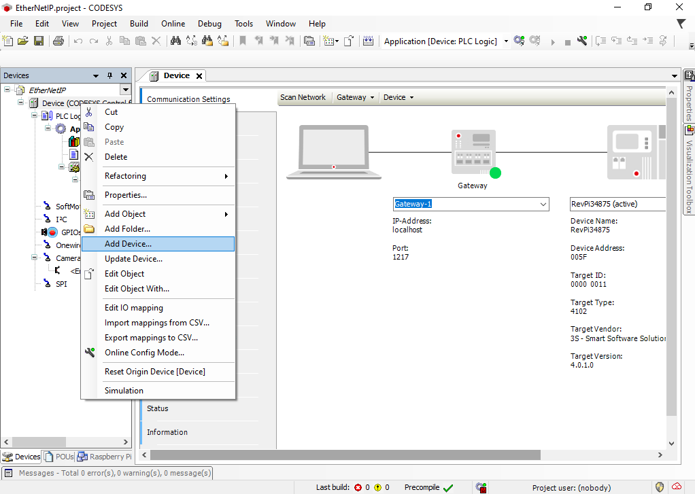
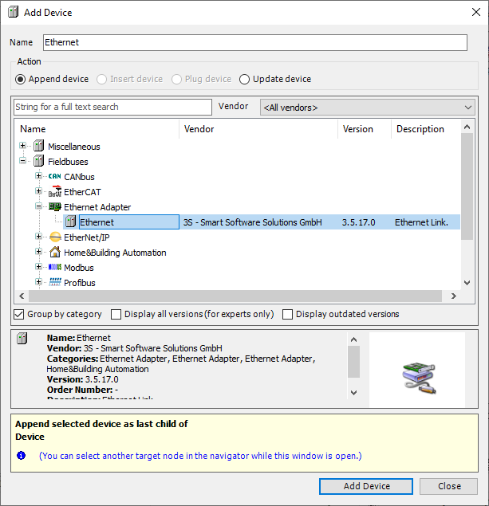
In the device tree double-click on Ethernet to open the Network interface configuration and click on Browse to select the Network interface (in the diagram above port B, eth1) that is connected to your EtherNet/IP Adapter device.
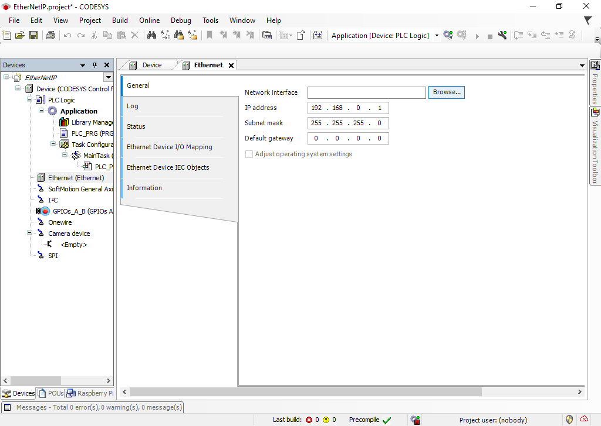
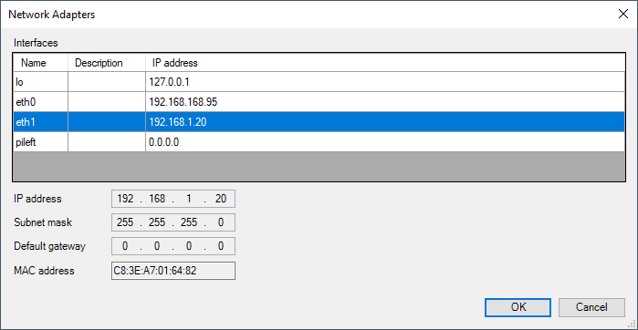
Continue to add an EtherNet/IP Scanner to the Ethernet device.
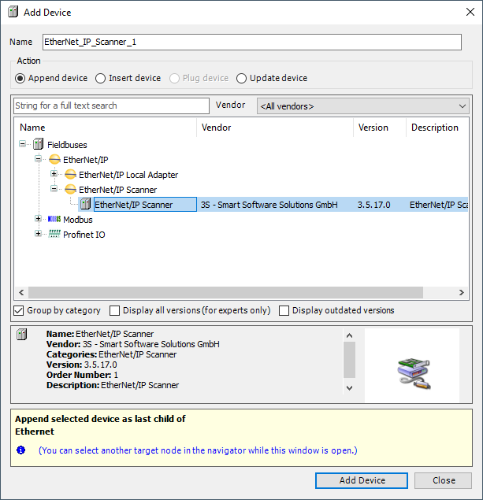
Once complete you can build your project, enter Online mode and start your application. This only starts the EtherNet/IP Scanner from where it is possible to scan for connected Adapter devices.
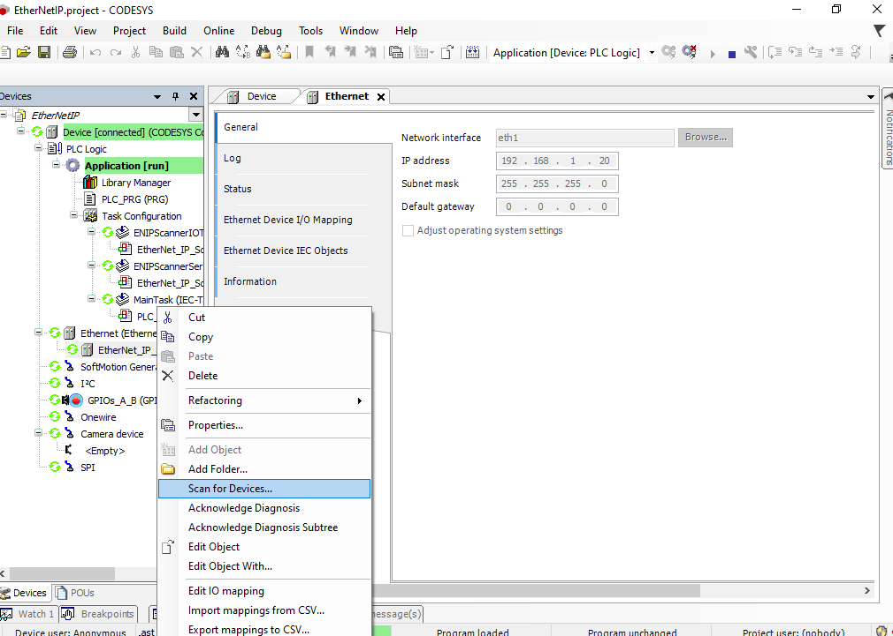
Provided the device description has been installed earlier, the scan process will identify the EtherNet/IP Adapter device which can now be copied to the project.
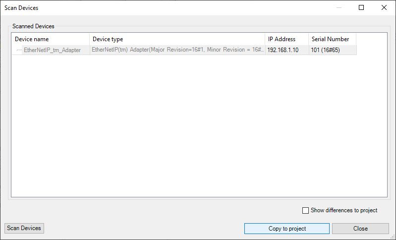
The final project structure now looks as shown below:
Finally, exit Online mode, re-enter Online mode to download the new project structure, and start the application.
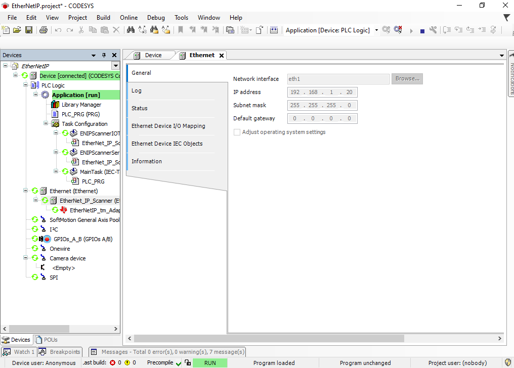
All devices are running, and you can continue with implementing your IEC 61131-3 program.
The EtherNet/IP Adapter example for AM64x implements a vendor specific object with class ID 0x0070 and attributes in the vendor specific index ranges following 0x0300. Attributes at index 0x0300 to 0x0304 are added to a producing assembly, at index 0x0308 to 0x030C to a consuming assembly. Of those, the attribute at index 0x0308 is linked to an LED array on the AM64x evaluation kit.
Below a simple PLC program coded in Structured Test is demonstrated that controls this LED array.
Start with double clicking on PLC_PRG in the project browser. An empty PLC_PRG opens in the central workspace, that by default contains the frame for the variable declaration on top and the programming area below.
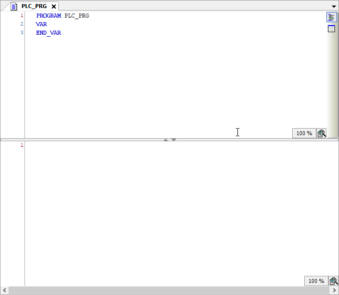
Modify the variable declaration as illustrated below:
Also create a Global Variable List by right-clicking on Application → Add Object → Global Variable List... Add one variable usiVisuOut.
The timer function block TON, which is included in the Standard Library, implements a turn-on delay. When the input gets TRUE, first a time (tCycle / 2) must elapse until also the output is set to TRUE. The example uses two such timers that alternate their states. Once the second timer elapses, a counter variable is incremented, which is then used to set the output on the target device.
Enter the code below into the programming section of PLC_PRG:
Next, the connections of the EtherNet/IP adapter device need to be configured. Double-click on EtherNet_IP_tm_Adapter in the Device tree. This opens the tab enabling the configuration of the example EtherNet/IP Adapter device. Under Connections, the requested packet interval (RPI) can be set:
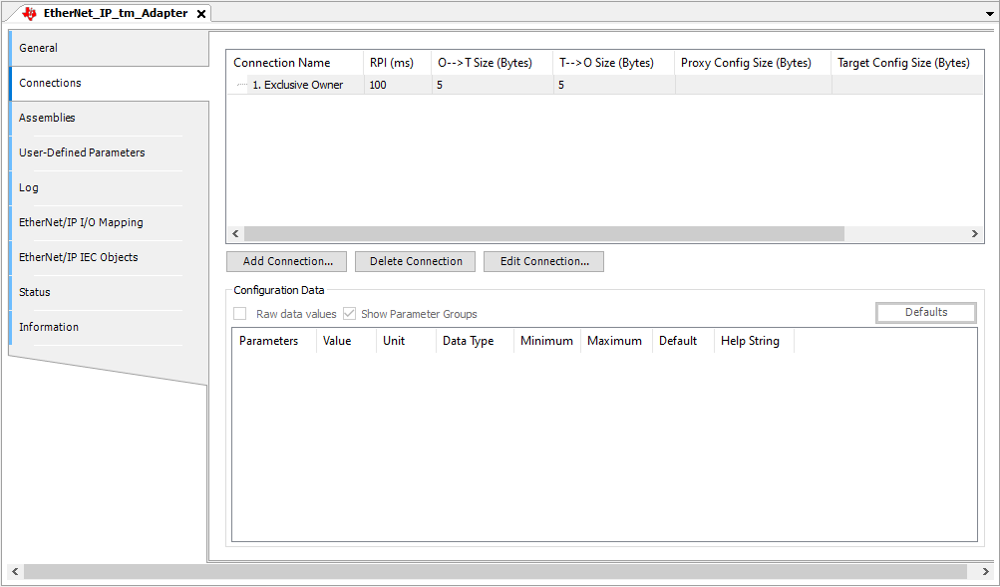
Under EtherNet/IP I/O Mapping the variables of the PLC_PRG are assigned to input or output channels declared for the Adapter device in the corresponding EDS file.
Double-click in the variable column in the Output1 row to start the Input Assistant.
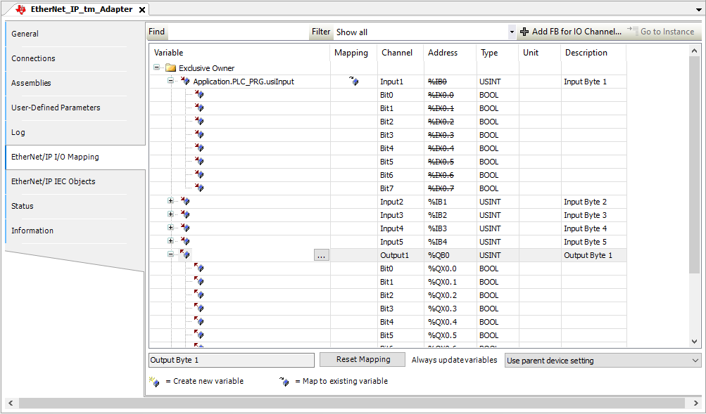
In the Input Assistant select usiOutput and confirm with OK.
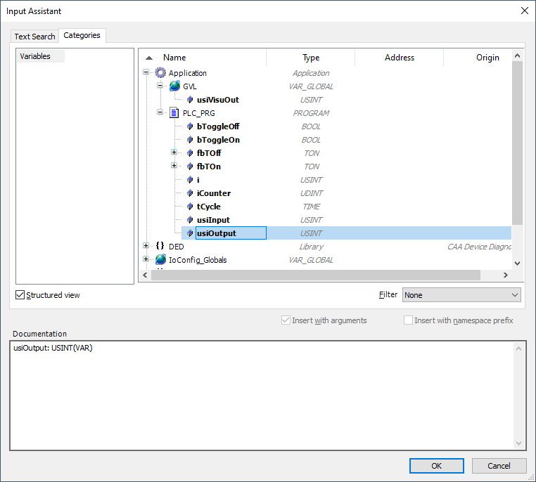
The project configuration is now finalized and can be downloaded to the CODESYS control on the Revolution PI. Login to the Revolution PI again to download the application, start the application, and note the activity on the LED array.
 1.9.7
1.9.7